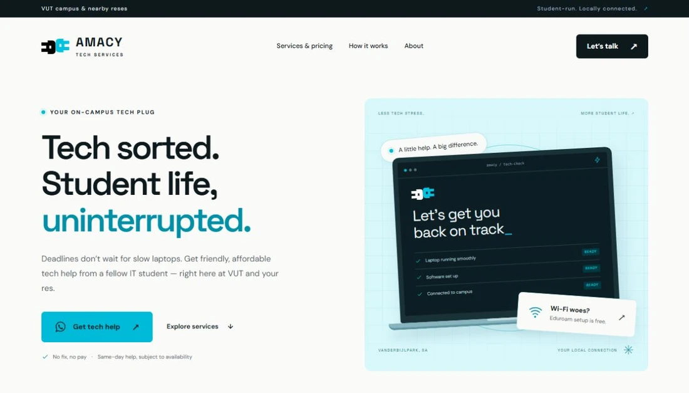
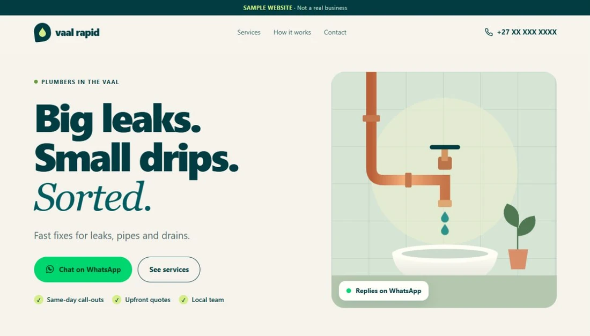
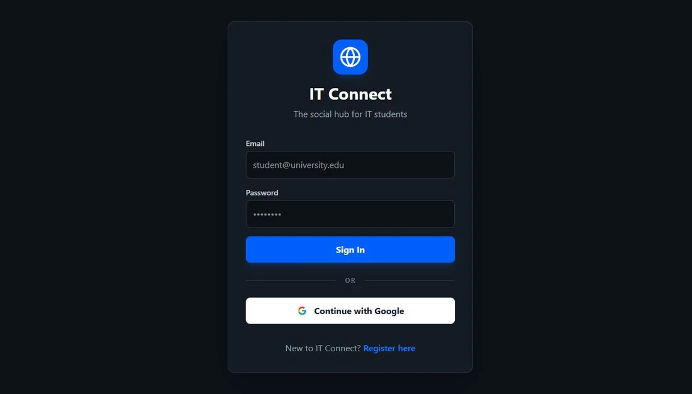
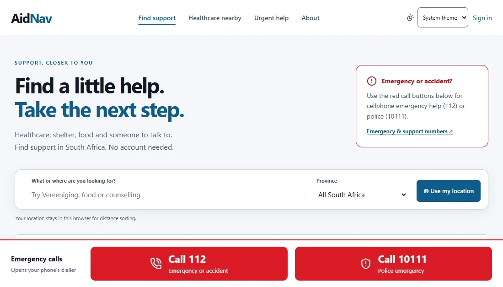

Student business Live
AmacyTech
My campus tech support website puts services and prices in one place. Students choose what they need and take their enquiry straight to WhatsApp.
Vanderbijlpark, South Africa
Software developer & network specialist
I’m an IT student at Vaal University of Technology. I build websites and desktop tools, configure networks, and help students solve everyday tech problems.

Student business Live
My campus tech support website puts services and prices in one place. Students choose what they need and take their enquiry straight to WhatsApp.

Website design study Live
A sample site for a fictional plumbing business in the Vaal. It shows how a customer can identify a service and start an enquiry from their phone.

React application Live
A social portal for IT students, built with React, TypeScript and Vite. The live app opens at the sign-in screen with email and Google sign-in options.

South African support directory In progress
I built a directory to help people find healthcare, shelter, food support and counselling in South Africa. Visitors can search by town or filter by province without an account.
Tools I use to build interfaces, work with data, and test network designs.
I study IT in Vanderbijlpark and run AmacyTech around campus. Helping someone get their laptop ready for a deadline is one part of my week. Another is building a website or working through a network design.
I’m working towards becoming a software engineer. My database and networking projects let me explore what happens behind the interface.
A desktop project that connects a management interface to an Oracle SQL database.
A documented network configuration covering VLANs, routing protocols and subnetting.
For a project, a collaboration or a role, email me.